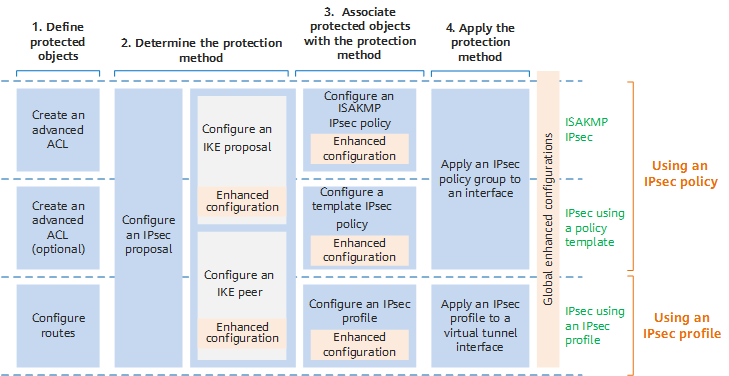

IPsec Configuration Process
After an IPsec tunnel is established between peers, the peers can implement different protection policies for different data flows. Figure 1 shows the IPsec configuration process, which includes the following steps:
- Define protected objects: Define IPsec-protected objects (data flows) using advanced ACLs or routes.
- Determine the method of data flow protection: Configure IPsec proposals and IKE peers to determine the method of data flow protection.
- Associate protected data flows with the protection method: Define IPsec using IPsec policies or IPsec profiles.
- Apply the protection method: Apply IPsec policies or IPsec profiles to interfaces.
Figure 1 IPsec configuration process
IPsec is classified into ISAKMP IPsec, IPsec using a policy template, and IPsec using an IPsec profile
based on how protected data flows are associated with the protection method.
- When an ISAKMP IPsec policy is used to establish an IPsec tunnel, the data flows to be protected need to be defined using ACLs. The initiator and responder define the parameters to be negotiated in the IPsec policy, and the parameter settings must be the same on the initiator and responder. The end that has an ISAKMP IPsec policy configured can initiate negotiation.
- When a template IPsec policy is used to establish an IPsec tunnel, the data flows to be protected do not need to be specified. The local end can function only as the negotiation responder to receive negotiation requests from the remote end. The optional parameters that are not defined in the IPsec policy are determined by the initiator.
- When an IPsec profile is used to establish an IPsec tunnel, the data flows to be protected do not need to be defined using ACLs. Instead, routes need to be configured to help determine the data flows to be protected. In this case, you need to configure an IPsec profile and apply it to a tunnel interface. All the packets routed to the interface will then be protected by IPsec.